✱ Esclarecimentos:
Utilize ferramentas como editores, navegadores (para pesquisa) e outros aplicativos e programas
para desvendar os enigmas.
Caso esteja difícil, clique no ícone de lâmpada no canto superior direito e você terá uma dica.
Existe apenas uma por fase.
Preste atenção em tudo que esta sendo contado pelas fases. Anote, você irá precisar.
Olhe todos os lugares possíveis no site da fase: o nome da aba (para celular é só clicar na url)
e a descrição da imagem (para celular é só você clicar e segurar a imagem e para pc é só você
passar o mouse na imagem)
Lembrando, esses enigmas não foram feitos para serem impossíveis, apenas pense usando tudo
que tiver descoberto na fase.
Caso você consiga chegar ao final, não se preocupe, logo chegarão mais enigmas!
Clique em 'Start' para começar.